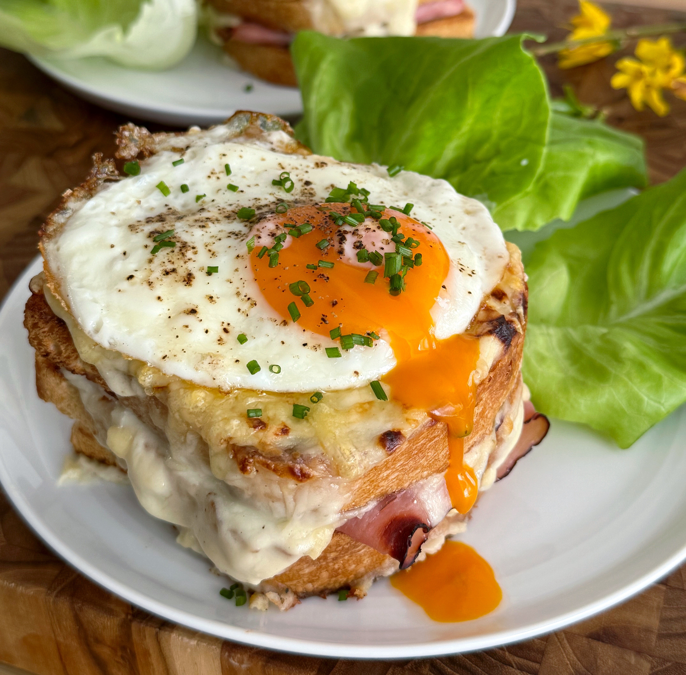
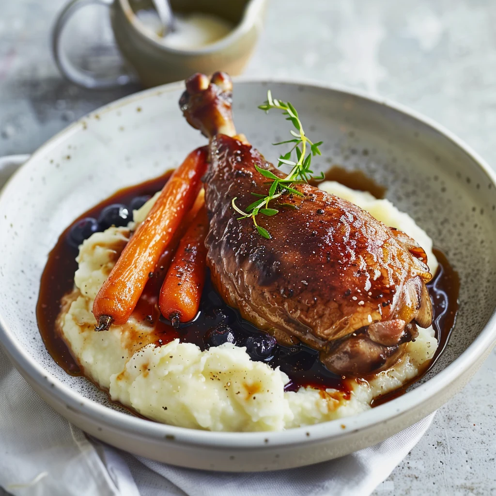
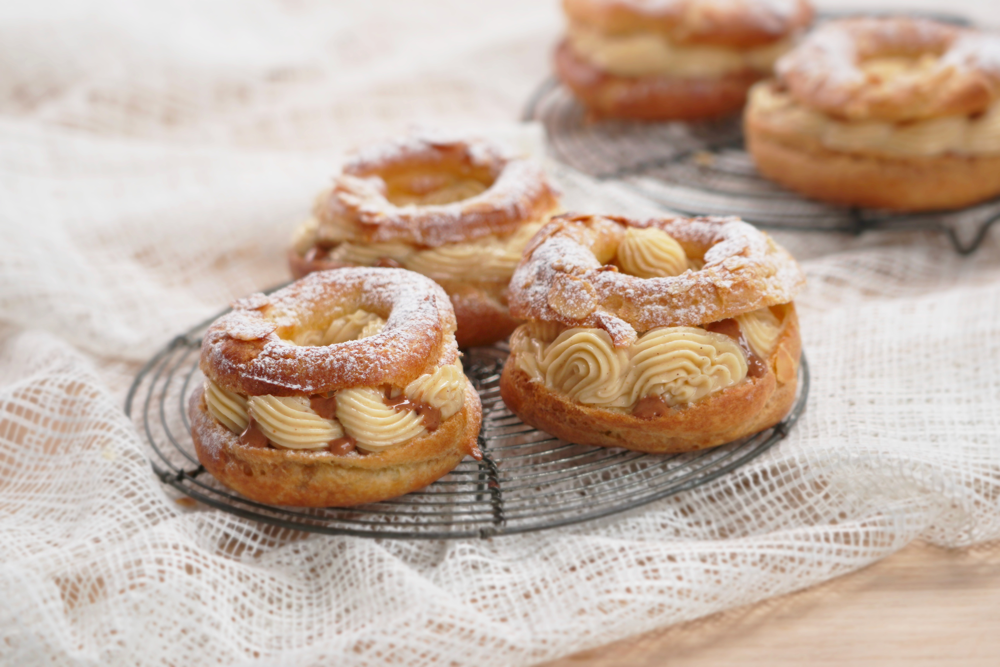
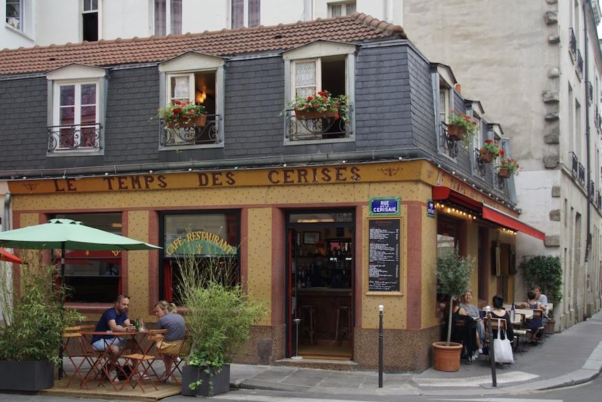
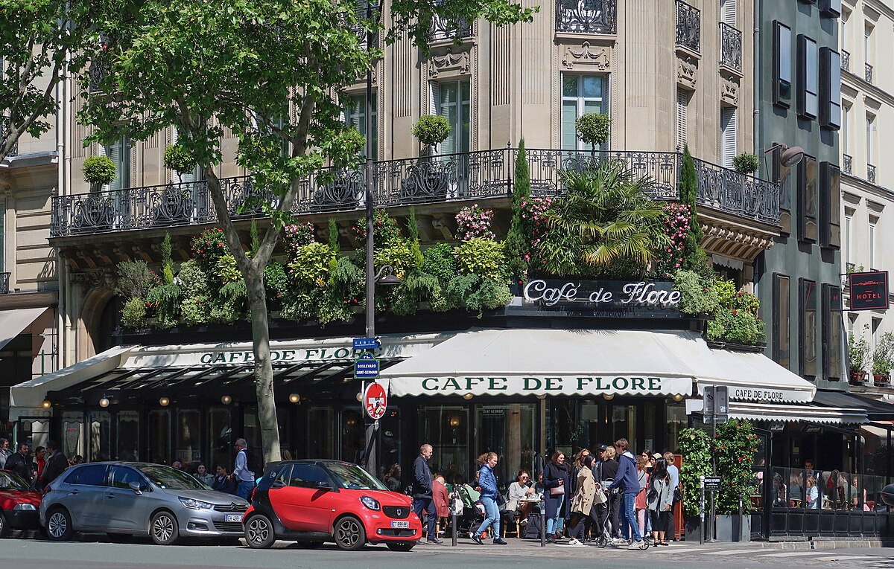
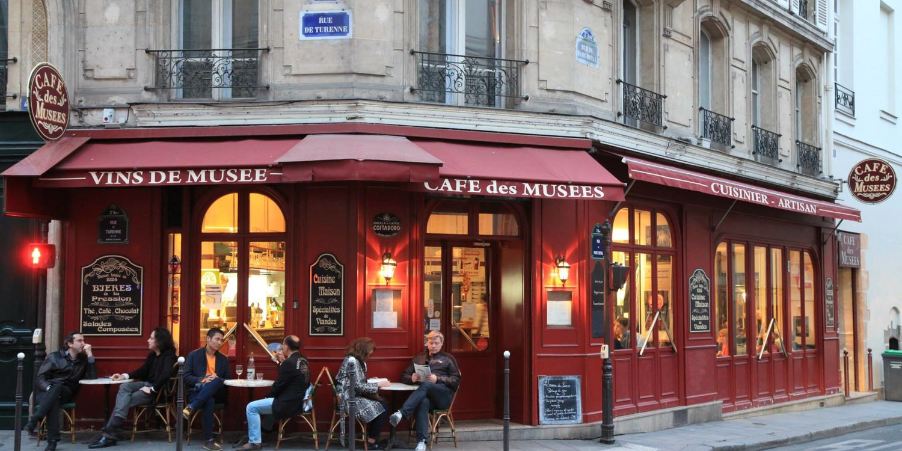

France is quite famous for its food, and every street in Paris has something delicious to offer.
Paris prides itself in being home to some of the most delicious food that France has to offer. You can grab a table at a cozy bistro for a duck confit, or treat yourself to a coquilles Saint-Jacques in a fancy Michelin-starred meal if you’re feeling indulgent. Strolling through neighborhoods like Le Marais or Saint-Germain, you’ll find bakeries with buttery pastries, cafés perfect for people-watching, and markets full of fresh cheeses and produce. Whether it’s a warm croissant in the morning or a rich dessert at night, you will definitely find some food to love in Paris.
Here is our selection of some of the top restaurants in Paris and the dishes the city is known for!
Top dishes in Paris
1. Croque Madame

A French Classic with a Sunny Upgrade!
The Croque Madame is the kind of dish that proves French comfort food can still feel effortlessly elegant. It's the sister to France's famous Croque Monsieur, with one key difference - It's topped with a fried egg! Think of it as the luxury version of a grilled cheese: built on golden, buttery toast layered with ham and melted cheese, and topped with a runny fried egg. The combination is simple yet irresistible—crispy, creamy, and just indulgent enough to feel special. It's a French classic and a must-try when stopping for breakfast in a Parisian cafe!
2. Duck Confit

France's favourite dinner!
Crispy on the outside, tender on the inside, Duck Confit is one of those must-try dishes that captures the heart of traditional French cooking. The duck is slowly cooked in its own fat for several hours, then finished with a crisp, golden skin that adds a lovely crunch. It’s rich without being overwhelming, especially when paired with simple sides like roasted potatoes or a fresh green salad. Whether you’re dining in a cozy neighborhood bistro or a more polished Parisian spot, duck confit offers a comforting, authentic taste of Paris that feels both rustic and refined.
3. Paris-Brest

The perfect Parisian Dessert!
The Paris-Brest is a classic French pastry which is the perfect dessert to represent the city of Paris. Shaped like a wheel and made from light, airy choux pastry, it’s filled with a silky praline cream that’s rich and nutty. The texture is a perfect mix of crisp pastry and smooth, decadent filling. You’ll find it in many of Paris’s top pâtisseries, where it’s often crafted with creative twists, but even the classic version is enough to win you over. It’s the kind of treat that turns a simple pastry stop into a highlight of your trip.
Top restaurants in Paris
1. Le Temps des Cerises

A Piece of Paris' History
This charming little restaurant tucked in Le Marais feels like stepping into a piece of Paris history. With cozy wood-panelled walls, old photographs, and a warm, laid-back atmosphere, it’s the kind of place you go to unwind over classic French fare. Think comforting, traditional dishes that feel lovingly homemade—the perfect spot for a romantic or relaxed dinner.
2. Café de Flore

The Most Iconic Cafe in Paris!
One of the most iconic cafés in all of Paris, Café de Flore is in Saint-Germain-des-Prés and has long been a hangout for writers, philosophers, and artists. You can sit on the terrace, sip a café crème, and just soak in the Parisian street life. Its history and timeless charm make it a must-visit.
3. Le Café des Musées

The Classic Parisian Bistro
This is a quintessential Parisian bistro, with vintage mosaic floors, wood-panelled walls, and an open kitchen so you can watch how the food is made. It’s been around since 1924. Their menu features classic dishes—terrine de campagne, stuffed mushrooms, and a very well-loved boeuf bourguignon simmered for hours.